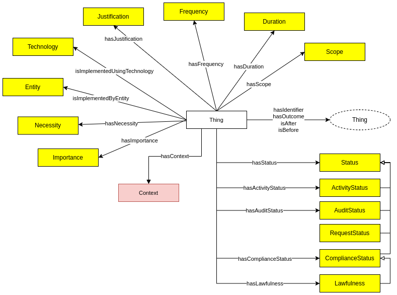

The Data Privacy Vocabulary [[DPV]] enables expressing machine-readable metadata about the use and processing of personal data based on legislative requirements such as the General Data Protection Regulation [[GDPR]]. This document describes the DPV specification along with its data model.
[[[DPV-Primer]]]: An introductory document for DPV's concepts and taxonomies.
Newcomers to the DPV are strongly recommended to first read through the Primer to familiarise themselves with the semantics and concepts of DPV.
[[[DPV]]]: (this document) The formal and normative description of DPV and its concepts, with serialisations in RDFS & SKOS [[DPV-SKOS]] and OWL2 [[DPV-OWL]]
Extensions to Concepts:
[[DPV-GDPR]]: for GDPR concepts; serialisations: [[DPV-SKOS-GDPR]], [[DPV-OWL-GDPR]]
[[DPV-PD]] for Personal Data concepts; serialisations: [[DPV-SKOS-PD]], [[DPV-OWL-PD]]
[[DPV-LEGAL]] for Jurisdiction-relevant concepts; serialisations: [[DPV-SKOS-LEGAL]], [[DPV-OWL-LEGAL]]
[[DPV-TECH]] for Technology concepts; serialisations: [[DPV-SKOS-TECH]], [[DPV-OWL-TECH]]
[[RISK]] for Risk Assessment and Management concepts; serialisations: [[RISK-SKOS]], [[RISK-OWL]]
For a general overview of the Data Protection Vocabularies and Controls Community Group [[DPVCG]], its history, deliverables, and activities - refer to DPVCG Website.
The peer-reviewed article “Creating A Vocabulary for Data Privacy” presents a historical overview of the DPVCG, and describes the methodology and structure of the DPV along with describing its creation. An open-access version can be accessed here, here, and here.
Contributing to the DPV and its extensions The DPVCG welcomes participation regarding the DPV, including expansion or refinement of its terms, addressing open issues, and welcomes suggestions on their resolution or mitigation. For further information, please see the contribution section.
Introduction
This document assumes the reader is familiar with DPV through the [[[DPV-Primer]]], and thus focuses on providing a topically structured documentation of concepts defined by DPV.

Duration and Frequency
To express the duration of events or operations, such as how long processing will take or the validity of consent, the concept [=Duration=] can be used. Duration is indicated using the relation [=hasDuration=], and has the following subtypes:
[=TemporalDuration=] - indicating a relative temporal duration, e.g. 6 months.
[=UntilTimeDuration=] - indicating duration that occurs until the end of specified time, e.g. until 31 DEC 2022.
[=UntilEventDuration=] - indicating duration that occurs until the end of specified event, e.g. until account is closed.
[=FixedOccurencesDuration=] - a duration that is based on number of occurences, e.g. until you view it 3 times
[=EndlessDuration=] - indicating a duration without an end condition or temporal notation.
[=Frequency=] indicates how frequently something occurs. Statistically, this can be expressed as the combination of number of occurences and a time period, which can further be expressed as a probabilitic value or a percentage. For example, for something occuring once every year, the frequency is: 1 or 100% for 1 year. While such quantified representations are important for determining metrics and performing operations, DPV focuses on the qualitative labelling of such representations within a specific context.
The relation [=hasFrequency=] associates a frequency with a context, and can be expressed using the following subtypes:
[=ContinousFrequency=] - indicates things occuring continously, e.g. location collection happens continously.
[=SporadicFrequency=] - indicates things occuring sporadically or rarely or not often, e.g. collecting system usage logs every month.
[=OftenFrequency=] - indicates things happen often or regularly or commonly, e.g. online status is reported every 5 mins.
[=SingularFrequency=] - indicates things happen only once.
DPV provides two subtypes of concepts to denote contextual - [=Importance=] and [=Necessity=], which can be applied to specific contexts such as [=PersonalDataHandling=], [=Purpose=], [=PersonalData=].
[=Importance=] is similar in application to [=Necessity=], and provides a way to indicate how central or significant the indicated operation(s) are to the context (e.g. to the Controller). Subtypes of importance are [=PrimaryImportance=] to indicate 'main' or 'central' or 'primary' importance, and [=SecondaryImportance=] to indicate 'auxiliary' or 'peripheral' or 'secondary' importance.
[=Necessity=] enables specifying whether the contextual information is [=Required=], is [=Optional=], or is [=NotRequired=]. These can be used to indicate, for example, which parts of processing operations (e.g. purposes, personal data) are optional, and whether a particular processing operation is required to be carried out.
dpv:Scope: Indication of the extent or range or boundaries associated with(in) a context
go to full definition
Status
To assist with expressing the state or status associated with various activities, DPV provides the [=Status=] concept that can be associated contextually using the [=hasStatus=] relation. Specific subtypes are provided as [=ActivityStatus=], [=ComplianceStatus=] including [=Lawfulness=], [=AuditStatus=], [=ConformanceStatus=], and [=RequestStatus=].
[=ActivityStatus=] represents a state or status of an activity's operations and lifecycle, which includes [=ActivityProposed=], [=ActivityOngoing=], [=ActivityHalted=], [=ActivityCompleted=], and [=ActivityNotCompleted=].
[=ComplianceStatus=] represents status associated with compliance with some norms, objectives, or requirements. Types include [=Compliant=], [=PartiallyCompliant=], [=NonCompliant=], [=ComplianceViolation=], [=ComplianceUnknown=], [=ComplianceIndeterminate=]. The association with a law or objective can be specified using [=hasApplicableLaw=] or [=hasPolicy=] directly for the status or indirectly through the concept whose status is being represented.
[=Lawfulness=] represents a special type of [=ComplianceStatus=] which relates to legal compliance, or lawfulness, and has types [=Lawful=], [=Unlawful=], and [=LawfulnessUnkown=].
[=AuditStatus=] represents the state or status of an audit, where the term audit is loosely defined, and may or may not relate to legal compliance - for e.g. for impact assessments, or as part of certification, or organisational quality assurance processes. Types of audits include [=AuditApproved=], [=AuditConditionallyApproved=], [=AuditRejected=], [=AuditRequested=], [=AuditNotRequired=], and [=AuditRequired=].
[=ConformanceStatus=] represents the status of conformance, which is defined distinctly from compliance by considering voluntary association or following of a guideline, requirement, standard, or policy, and where compliance is related to the (legal or other systematically defined) conformity of a given system or use-case with rules which may dictate obligations and prohibitions that must be followed. To provide an illustrative example, consider conformance with a standard on best practices regarding security may assist in the demonstration of compliance with a legal norm requiring organisational measures of security. Types of conformance defined are: [=Conformant=] and [=NonConformant=].
[=RequestStatus=] represents the state or status of requests, which can be between entities such as data subjects and controllers regarding exercising of rights, or between controllers and processors regarding processing operations, or between authorities and controllers regarding compliance related communications. Types of request statues are: [=RequestInitiated=], [=RequestAcknowledged=], [=RequestAccepted=], [=RequestRejected=], [=RequestFulfilled=], [=RequestUnfulfilled=], [=RequestRequiresAction=], [=RequestRequiredActionPerformed=], [=RequestActionDelayed=], and [=RequestStatusQuery=].
dpv:Unlawful: State of being unlawful or legally non-compliant
go to full definition
dpv:NonCompliant: State of non-compliance where objectives have not been met, but have not been violated
go to full definition
dpv:PartiallyCompliant: State of partially being compliant i.e. only some objectives have been met, and others have not been in violation
go to full definition
dpv:ConformanceStatus: Status associated with conformance to a standard, guideline, code, or recommendation
go to full definition
To represent location, the concept [=Location=] along with relations [=hasLocation=] is provided. For geo-political locations, the concepts such as [=Country=] and [=SupraNationalUnion=] are subtyped, with [=hasCountry=] and [=ThirdCountry=] with [=hasThirdCountry=] provided for convenience in common uses (e.g. data storage, transfers).
To define contextual location concepts, such as there being several locations, or that the location is 'local' to an event, DPV provides two concepts. [=LocationFixture=] specifies whether the location is 'fixed' or 'deterministic', with subtypes for fixed single, fixed multiple, and variable locations. [=LocationLocality=] specifies whether the location is 'local' within the context, with subtypes for local, remote, within a device, or in cloud.
To represent locations as jurisdictions, the relation [=hasJurisdiction=] is provided. The concept [=Law=] represents an official or authoritative law or regulation created by a government or an authority. To indicate applicability of laws within a jurisdiction, the relation [=hasApplicableLaw=] is provided.
The [[[DPV-LEGAL]]] provides taxonomies extending these concepts, such as to represent specific countries, their laws, authorities, memberships, adequacy decisions, and other information.
dpv:Law: A law is a set of rules created by government or authorities
go to full definition
dpv:Location: A location is a position, site, or area where something is located
go to full definition
dpv:Country: A political entity indicative of a sovereign or non-sovereign territorial state comprising of distinct geographical areas
go to full definition
dpv:Region: A region is an area or site that is considered a location
go to full definition
dpv:City: A region consisting of urban population and commerce
go to full definition
dpv:ThirdCountry: Represents a country outside applicable or compatible jurisdiction as outlined in law
go to full definition
dpv:EconomicUnion: A political union of two or more countries based on economic or trade agreements
go to full definition
dpv:LocationLocality: Locality refers to whether the specified location is local within some context, e.g. for the user
go to full definition
dpv:CloudLocation: Location that is in the 'cloud' i.e. a logical location operated over the internet
go to full definition
dpv:SupraNationalUnion: A political union of two or more countries with an establishment of common authority
go to full definition
dpv:LocationFixture: The fixture of location refers to whether the location is fixed
go to full definition
dpv:DecentralisedLocations: Location that is spread across multiple separate areas with no distinction between their importance
go to full definition
dpv:FederatedLocations: Location that is federated across multiple separate areas with designation of a primary or central location
go to full definition
dpv:FixedLocation: Location that is fixed i.e. known to occur at a specific place
go to full definition
dpv:FixedMultipleLocations: Location that is fixed with multiple places e.g. multiple cities
go to full definition
dpv:FixedSingularLocation: Location that is fixed at a specific place e.g. a city
go to full definition
State of an activity that could not be completed, but has reached some end state
Usage Note
This relates to a 'Stop' state as distinct from a 'Halt' state. It makes no comments on whether the Acitivity can be resumed or continued towards completion.
State of being conditionally approved through the audit
Usage Note
A "conditional approval" is intended to reflect states where the audit has identified further changes which must be implemented before considering the audit has been 'passed', without requiring another audit to validate them. This is distinct from the case where an audit has state 'rejected', which means changes must be made and submitted for review. The requirements of a 'conditional acceptance' are expected to be minor or not significant enough to warrant another audit to review them.
Context is a catch-all concept for information of relevance not possible to represent through other core concepts. DPV offers specific contextual concepts such as Necessity, Frequency, and Duration. More can be created by extending Context within use-cases.
A political entity indicative of a sovereign or non-sovereign territorial state comprising of distinct geographical areas
Usage Note
The definition of country is not intended for political interpretation. DPVCG welcomes alternate definitions based in existing sources with global scope, such as UN or ISO.
Duration that is indeterminate or cannot be determined
Usage Note
Indeterminate means (exact or otherwise) information about the duration cannot be determined, which is distinct from 'EndlessDuration' where it is known (or decided) that the duration is open-ended or without an end.